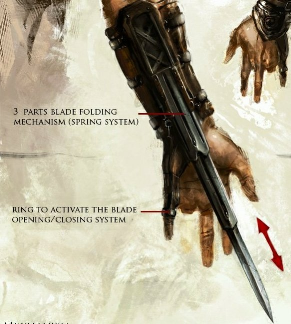

Lamă ascunsă
"Hiden blade-ul a fost un companion al nostru de care nu ne-am putut lipsi de-a lungul anilor. Unii ar spune că ne definește - și nu s-ar înșela complet. Multe dintre succesele noastre nu ar fi fost posibile fără ea". ―Codexul lui Altaïr Ibn-La'Ahad, maestru Asasin
Lama ascunsă este arma de semnătură a membrilor Frăției Asasinilor, concepută ca mijloc principal de a comite asasinate. Constând dintr-o lamă care poate fi extinsă sau retrasă discret, portabilitatea și ascunderea lamei ascunse completează afinitatea mărcii comerciale a asasinilor pentru stealth și freerunning. Permite unui asasin să elimine o țintă în timp ce nu atrage practic nicio atenție asupra lor, iar tehnicile dezvoltate pentru utilizarea ei asigură adesea moartea aproape instantanee.
În afară de aplicațiile sale practice, lama posedă un statut ceremonial datorat istoriei sale îndelungate, datând cel puțin din Imperiul Achemenid, când asasinul Darius a folosit lama pentru a ucide regele persan Xerxes I al Persiei. Lama a călătorit mai târziu în Egipt cu Darius, după care soarta sa este necunoscută. În primul secol î.e.n. a fost dată lui Aya(cofondatorare a Asasinilor) de Cleopatra. Mai târziu, Bayek a primit lama originală de la Aya, după care Aya și-a făcut o replică. Bayek a cimentat-o ca fiind armă a celor ascunși și, prin intermediul acestora, a Frăției asasinilor. De atunci, Lama ascunsă a continuat să evolueze de-a lungul mileniilor.
După cum sugerează și numele său, lama ascunsă este o armă ascunsă care este compusă dintr-o lamă îngustă așezată într-un canal de pe partea inferioară a bretelei sau a mănușii. Controlată de un mecanism cu arc, lama se poate extinde și retrage spontan din poziția sa. În timp ce acest mecanism a diferit de la un model la altul de-a lungul secolelor, cel utilizat de către Frăția Levantină timpurie a folosit un inel înconjurat de degetul mic și legat de lamă. Acest inel, când a fost tras prin extinderea degetului alături de o mișcare simultană a încheieturii, a activat mecanismul și a dezlănțuit lama. Utilizarea lamei ascunse a necesitat inițial amputarea unui deget inelar ca mijloc de a permite extinderea lamei în cazul în care utilizatorul strânge pumnul, dar acest lucru nu înseamnă că lama în sine a fost inoperabilă fără sacrificiu, deoarece ambii Bayek și Layla Hassan au fost capabili să folosească lama pur și simplu bătându-și încheieturile. Deoarece dimensiunea lamei i-a permis să se potrivească cu grijă prin golul rezultat, atunci când un asasin a încleștat pumnul, arma a funcționat în esență ca o extensie a propriului spirit și corp al asasinului - un înlocuitor literal al degetului pierdut. În acest fel, sacrificiul cerut prin utilizarea lamei ascunse a fost menit să demonstreze angajamentul absolut al celui care o mânuiește. Acest obicei a început pentru prima dată când Bayek din Siwa și-a rupt din greșeală degetul inelar când a ucis pe Eudoros, al Ordinului Bătrânilor.